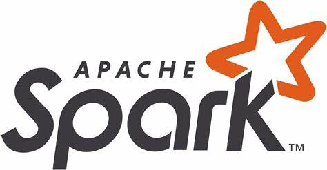

While my background is in civil engineering, I have spent two years specialising in the exciting field of data science and
will graduate with a Master of Applied Data Science (MADS) in February 2026. I’m pursuing an entry level role where I can
leverage my skills in software development, machine learning, and data analytics. I love data
and problem-solving, and outside of work, I am a passionate competitive rock climber. My data science skills are showcased
in the projects below.
 MADS - University of Canterbury - 2026
MADS - University of Canterbury - 2026

My masters project with an industry partner, Ruby Play Network. In this project I designed, trained, assessed, and deployed a machine learning solution to automatically flag players deemed at risk of gambling disorder. This showcases my experience with Databricks, building workflows, and using Spark.
MADS - University of Canterbury - 2025
In this project I investigate geographic factors and their relationship with conflict in Kenya, South Sudan, Ethiopia, and Uganda. This project demonstrates use of a standard structure with version control and a full data science pipeline with a geospatial context.
MADS - University of Canterbury - 2025

These projects demonstrate my competency using Spark for efficient and distributed data processing and machine learning.
MADS - University of Canterbury - 2025
My statistical understanding of classical machine learning algorithms including creation, training, and evaluation is showcased in these projects, using R.
MADS - University of Canterbury - 2025
University laboratory reports showcasing competency in geospatial analysis using ArcGIS Pro

Data from the previous project is used to build a basic Tableau Dashboard, demostrating competence in BI reporting and Tableau. Additional dashboards can also be viewed here.
Industry Certification - Institute of Data - 2022/2023
These projects showcase my introduction to machine learning algorithms and demonstrate skills in data cleaning, wrangling, and visualisation in Python with pandas and matplotlib.
BE - University of Canterbury - 2021
My BE final year (honours) project was my introduction to the field of data science and involved adapting a machine learning algorithm to identify patterns in time-series data.